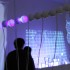
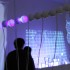
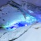
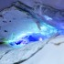

reactive landscapes
reactive landscapes – installationen
immersive environments führen den besucher durch
abstrakte landschaften
ausstellungszeitraum:
sa. 26.03. – 20:00 uhr
so. 27.03. – 15:00 – 19:00 uhr
austellungsort:
frappant e.V., zeiseweg 9, 22765 hamburg ehemalige
viktoriakaserne
http://frappant.org
 
 

 
 


Ein Kooperationsprojekt der Departments Design und Informatik mit Christine Böhler, Marc Breit, Hannes Dieck, Aleksej Dygoduk, Roman Geez, Julia Holtmann, Johannes Knapp, Benjamin Kuska, Alexander Philipp, Milena Rötting, Janina Schlichte, Urte Schwass, Moritz Uhlig.
Gäste: Henna Atif, Anastasia Lichtenwald, Sanna Naser, Kiana Shahsaheby, Sonja Hormann.
Betreut von Prof. Franziska Hübler und Prof. Dr. Birgit Wendholt mit Unterstützung der Zentralwerkstatt.
Ausstellungsdokumentation: Adriane Künne.
Projektvideos: Marissa Kimmel.
PixelCity…Lichtstadt im Wandel
von Janina Schlichte, Alex Philipp und Moritz Uhlig
Design Aspekte
Die Installation soll vom Aufbau der Konstruktion an “Straßen der Großstadt bei Nacht” erinnern. Die durch Bewegung der Betrachter erzeugten Lichtveränderungen symbolisieren den stetigen Veränderungsprozess in urbanen, öffentlichen und dicht besiedelten Räumen.
Die Stadt ist ein Erlebnisraum und eine Bühne mit stetig wandelnden und individuellen Strukturen. “Citytainment” ist das Stichwort, mit dem in der Thematik dieser Arbeit gespielt wird. Möglichst sensibel tasteten wir uns mit dem Einbau von Lichteffekten und Wahl der Farbkompositionen voran, die oftmals nochmals verworfen wurden, um für uns alle an ein zufriedenstellendes Ergebnis zu kommen. Die integrierte Projektion, die das Konzept visuell unterstützt wurde dem Thema angepasst, so verändern sich innerhalb ständig kleine Details. Unser Ziel ist es, sowohl eine poetisch-ästhetisch anmutende Arbeit zu präsentieren, wie auch einen kleinen Prototypen für die futuristische Lichtplanung im öffentlichen Raum.
Interessant zu beobachten, ist natürlich auch der Entwicklungsprozess der Kommunikation zwischen Mensch und Technik. Das Thema ” Überwachung” bleibt bei realen Aufbau von Installationen in der Großstadt natürlich nicht aus. Doch da der Großteil der öffentlichen Räume ja eh schon bewacht wird, könnte man an diesen Stellen doch für eine hübschere und unbedrohlichere Hülle sorgen…?

Technik
Hardware
Das Hauptprogramm läuft auf einem gewöhnlichen Rechner, an den ein Arduino Mikrocontroller und eine Kamer angeschlossen sind. Zusätzlich kommen drei kaskadierte LED-Treiberboards zum Einsatz, die jeweils über drei 16-Kanal Treiberbausteine verfügen. Somit ist es möglich 48 RGB-LED-Einheiten anzusteuern.

Software
Die Interaktion mit der Kamera ist mittels einer in C++ geschriebenen Komponente realisiert, die OpenCV-Blibliothek zur Bildverarbeitung nutzt. Es werden Haar Cascades zur Objekterkennung verwendet, mit denen man durch unterschiedliche Trainingsdateien beispielsweise Körper, Oberkörper oder Gesichter erkennen und deren Position im Raum bestimmen kann.
Da die Objekterkennung stark von guten Lichtverhältnissen abhängt und je nach zu erkennedem Objekt bzw. Körperteil eine aufwändig zu erstellende Trainingsdatei benötigt wird kann alternativ auch ein einfacherer Differenzbildalgorithmus verwendet werden, der lediglich auf Bildänderungen – also Bewegungen – reagiert.
Die Koordinaten der erkannten Objekte werden dann in einem anderen Programmteil weiterverarbeitet: aus deren Position und Größe wird eine entsprechende Ausgabe an die LED-Treiber erzeugt. Dieser Programmteil ist in Scala geschrieben. Ebenso in Scala implementiert ist die Projektion, die aber die Eingabedaten der Kamera nicht verwendet.
Die Kommunikation zu den Treiberboards erfolgt über den Arduino. Dieser wird über den USB-Anschluss des Rechners mit Daten versorgt. Auf dem Arduino selbst läuft ein einfaches Programm, das lediglich den Eingabestrom synchronisiert und die vom PC übertragenen RGB-Werte unverändert in die Treiberbausteine schreibt.
Anfangs war der gesamte Code in Java bzw. Scala geschrieben und nutzte die OpenCV-Einbindung des Processing-Frameworks. Diese Einbindung ist jedoch sehr allgemein gehalten und die kompletten Bilddaten werden umkopiert um sie im Javateil des Programmes zu verwenden. Zudem wird jedes erfasste Bild in ein anderes Format umgewandelt, was zusätzliche Rechenzeit benötigt. Da wir die Rohbilddaten jedoch nicht benötigen, haben wir uns entschlossen den Bildverarbeitungsteil in C++ zu implementieren und lediglich die benötigten Koordinaten der Objekte im restlichen Code nutzbar zu machen. Dies erhöht die Anzahl der Bilder, die pro Zeiteinheit verarbeitet werden können leicht – jedoch nicht so stark wie angenommen, da die Auswertung der Haar Cascades die meiste Rechenzeit in Anspruch nimmt.
Zur Visualisierung der Kameradaten werden die Lichtkästen in Gruppen aufgeteilt und diesen Gruppen Koordinaten und eine Farbe zugeordnet. Wird nun ein einem Bereich des Kamerabildes Bewegung oder ein Objekt erkannt, so lässt das Programm die Gruppen aufleuchten, die diesem Bereich zugeordnet sind.
led land
von Benjamin Kuska, Johannes Knapp und Christine Böhler
Prototyp
Der Prototyp stellt eine Qualle mit 3 Tentakeln dar.
Design

Technik
Im Prototyp wurden sieben Lichtbereiche integriert. Der Körper bestand insgesamt aus vier Lichtbereichen, die sich am Design orientierten. Die drei Tentakeln stellten jeweils einen weiteren Bereich dar.
Das Licht wurde durch LED-Stripes erzeugt. Die Steuerung verlief über einen Arduino mit angeschlossenem TLC. Die Interaktion wurde von eine Logitech Kamera aufgenommen.
Das Bild der Kamera wurde mit einem Raster aus vier Bereichen belegt. Mittels Differenzbilder wurde Bewegung in den Bereichen erkannt und die Kennnummer des entsprechenden Bereichs an den Arduino übertragen.

Release

Das Release Objekt entfernte sich nun von dem Thema „Unterwasser“ hin zu „Entspannungswelt“. Es wurde ein Liegewiese erschaffen, die mit drei Sitzflächen, einem „Fluss“ und einem organischen Teil ausgestattet ist. Das gesamte Objekt nimmt eine Grundfläche von ca. 4m² ein.

Design

Technik
In der Liegewiese können die drei Sitzbereiche, fünf Abschnitte im Fluss und ein Teil im organischen Bereich separat angesteuert werden. Die Steuerung übernimmt hierbei ein Arduino mit zwei angeschlossenen TLCs.
Das Licht wurde durch LED-Stripes (à 3 LEDs) realisiert. In den Sitzbereichen sind jeweils 15 LED-Stripes. Im Fluss liegen je Abschnitt 9 LED-Stripes. Und im organischen Teil liegen 25 LED-Stripes. Insgesamt wurden somit 115 LED-Stripes verbaut.
Die Interaktion wurde durch eine Kamera über dem Objekt realisiert. Es wurde ein Raster über das Kamerabild gelegt, dass sowohl die drei Sitzbereiche, also auch die fünf Aktionsbereiche des Flusses überdecken. Der Kennnummer des jeweiligen Bereichs wurde dann an den Arduino übertragen.

Auf dem Arduino mussten mehrere Prozesse parallel ablaufen. Die Prozesse sind
- die Atmung des organischen Bereichs durch ein pulsierendes Licht,
- das fließende Wasser im Flussbett durch ein Lauflicht mit abklingender Welle
- der Fadeeffekt im Sitzbereich und das verzögerte zurück faden in den Ausgangszustand des Sitzbereichs
Um diese Parallelität zu realisieren wurde auf die Bibliothek „TimedAction“ [1] gesetzt. Hierüber können die einzelnen Prozesse in der Loop der Arduino Anwendung auf einfache Weise aktiviert, geprüft und deaktiviert werden.
[1] http://www.arduino.cc/playground/Code/TimedAction
Wave
von Marc Breit, Milena Rötting und Julia Holtmann
Design Aspekte
Der ursprüngliche Anstoß für das interaktive Objekt „Marionette“ vormals „Wave“ war der Gedanke organische Formen oder skurrile Bewegungen, die man aus der Natur kennt, zu imitieren, ohne zu realistisch dabei zu werden. Hierbei war uns besonders wichtig, dass dem Betrachter seine aktive Rolle begreiflich wird, nämlich dass er Teil der Installation ist und aktiv den Zustand des Objektes beeinflusst.
Trotz der anfänglichen Begeisterung mit Licht eine andächtige alltagsferne Atmosphäre zu erzeugen, welche bereits in etlichen Materialexperimenten auf ihre Wirkung erprobt worden war, beschränkten wir uns deshalb zunehmend auf Interaktion durch Bewegung. Denn wir stellten fest, dass das Dimmen oder die Farbregulierung von Licht weniger offensichtlich als Reaktion auf die Anwesenheit des Betrachters verstanden werden kann, als es bei Bewegung der Fall ist.
Besonders inspirierend hierfür war das Prinzip des „Wooden Mirror“, der durch Kameraerkennung kleine flächig angeordnete Holzelemente an den Stellen anwinkelt, an denen Bewegung auftritt und somit den Eindruck eines Spiegelbildes vermittelt.
Unser Wunsch war es, Bewegungsabläufe im Raum nach einem ähnlichen aber weniger komplexen Prinzip auf abstrakte Weise zu reflektieren. Dies führte zu einer relativ simplen Hängung, die somit auch ein wesentlich reduzierteres Design forderte, als es für die Lichtexperimente zunächst vorgesehen gewesen war.
Entstanden ist ein gliedriges, hängendes Gebilde, das auf das Verhalten des Betrachters mit kurzem Zucken reagiert.
Auch wenn es uns in erster Linie immer mehr um das Austesten der Möglichkeiten ging, als um das Vermitteln von Inhalten, so kann man das Ergebnis unserer Experimente auch als ironischen Kommentar zum Thema Freiheit verstehen, wenn man möchte.
Das Objekt mutet an wie eine moderne Marionette, die zwar den Vorgaben des Akteurs gehorcht, diese jedoch scheinbar „freiwillig“ nachahmt. Sie braucht nicht den direkten über einen Faden geleiteten Impuls, wie ihre klassischen Verwandten. Sie wirkt selbst bestimmt, ohne es zu sein, nimmt es aber mit einem (Schulter)Zucken.
Technische Aspekte
Die „Welle“ interagiert mit dem Betrachter über eine Webcam, die dessen Bewegungen aufzeichnet. Im Rahmen des Projektes wurde die Programmiersprache Processing, zusammen mit der OpenCV Bibliothek, zum Verarbeiten der Bildinformationen verwendet.
Das Bild der Webcam wird aktuell in 18 vertikale Segmente unterteilt, wobei jeder einen Bereich vor der „Welle“ darstellt. Das Erkennen einer Bewegung innerhalb eines Segments wird über das Differenzbildverfahren realisiert. Dazu wird ein vorheriges mit einem aktuellen Graustufenbild verglichen und im Falle einer Bewegung eine Differenz zwischen den einzelnen Pixelwerten errechnet. Wurden Bewegungen festgestellt, werden die betroffenen Segmente über eine Serielle Verbindung an den Arduino geschickt.
Die 18 Segmente werden im Arduino auf 6 Servo-Motoren aufgeteilt. Jeder Motor bekommt also 3 Seqmente zugeordnet, wobei er nur auf den Mittleren mit voller Intensität reagiert. Für die beiden äußeren Segmente wird bei der Positionsberechnung ein definierter Wert abgezogen, um einen sanfteren Übergang bei Bewegungen über mehrere Segmente zu erreichen.
Das Setzen der Servo-Motoren selbst kann mittels speziell definierter Variablen in beliebigen Schritten und innerhalb eines definierten Intervalls vorgenommen werden. Damit können wir den Gesamteindruck besser an die Gegebenheiten anpassen. Um dann auch bei groß eingestellten Schritten eine sanfte Bewegung zu realisieren, wird jeder Schritt nochmal in seine kleinsten Einheiten zerlegt und einzeln, nacheinander an die Servo-Motoren übertragen.
Da nun nach einer gewissen Zeit alle Servo-Motoren auf Bewegungen reagieren und damit Ihre Endposition einnehmen, haben wir eine Funktion geschrieben, die die Servo-Motoren bei Ereignislosigkeit wieder absenkt. Allerdings kann Ereignislosigkeit auch auftreten, wenn sich eine Person noch innerhalb der Segmente befindet. Deshalb speichern wir das Segment mit der letzten Position und senken nur die nicht betroffenen Servo-Motoren ab.
live ink crossing paperball
von Hannes Dieck, Urte Schwass,Aleksej Dygoduk und Roman Geez
Idee
In dem anfänglichen Prozess der Ideenfindung wurden mehrere Aspekte diskutiert. Jeder Projektteilnehmer brachte seine persönlichen Vorlieben aber auch individuelle Kritik hervor. Aus dieser Kreativphase entstanden mehrere Grundkonzepte. So wurden anfänglich abstrakte Modelle entwickelt, die detektierte Bewegungen farblich in Skulpturen abbilden. Der Gestaltung der Skulpturen wurde dabei bewusst keine Grenzen gesetzt. So waren Skulpturen mit klaren geometrischer Strukturen denkbar bis hin zu Objekten mit stark ausgeprägter organischer Morphologie.Im weiteren Projektverlauf wurden die Ideen konkreter und thematischer aber auch oft wieder verworfen. Themen wie die “interaktive Umkleidekabine” oder “Smash the Hedgehog” ,zu deutsch “Schlag den Igel”, wurden hervorgebracht.
Inspiriert durch Rohrschachbildern kam schließlich der Gedanke von verlaufenden Tintenflecken auf. Diese sollten in unserem Entwurfsmodell als Interaktions-Projektion dienen. Die Tintenflecke führten zu der Idee, den Betrachter in eine Umgebung zu führen, die ihm die Möglichkeit aufzeigt die Tintenflecke mit seinen Aktionen so real zu manipulieren. Um die Szene räumlicher zu Gestalten wurde eine Skulptur verwendet. Diese hat die Form einer großen Papierkugel und stellt dadurch die kontextuelle Brücke zum Thema “Malen, Zeichnen und Gestalten”.
Design
Die Tintenflecke werden auf einer Projektionsebene dargestellt. Als Projektionsebene dient ein stehender Kreis aus weißen Sperrholzplatten. Im Vordergrund der Projektion wabert die Papierkugel, eine leuchtende (bewegende) Skulptur überzogen mit weißen halbtransparenten Stoff. Dem Betrachter könnte die Änderung der Beleuchtung der Papierkugel bei bestimmten Aktionen ins Auge fallen. Eine Überlagerung der projezierten Tintenflecke und der Papierkugel ist denkbar.

Die Bewegungen/Aktionen werden in einem kontrollierten Bereich via Kamera aufgenommen. Als Aktionsbereich ist nur die Oberseite einer runden Säule vorgesehen. Hier befindet sich eine, aus einem Lampenschirm konstruierte, konvexe Spitze, so dass die Säule in ihrer Gesamterscheinung an einen Stift erinnern könnte. Die Oberseite wird vom inneren der Säule mit einem starken Gegenlicht ausgeleuchtet. Durch den, durch das Licht entstehenden, starken Kontrast wird die Aufnahme der Konturen von Objekten im Aktionsbereich ermöglicht. Gleichzeitig fällt dem Betrachter die Säule als Bedienelement auf. Schließlich ist es dem Betrachter durch seine Aktionen an der Säule möglich auf die projizierten Tintenflecke und die Papierkugel Einfluss zu nehmen.

Technische Aspekte
Die Papierkugel dient als zusätzliches Ausgabemedium. Die interne Beleuchtung der Kugel wird über LED-Stripes realisiert. Diese können einzeln über Tlc’s durch einen Arduino-Microcontroller-Board angesteuert werden. Durch Kommunikation über die serielle Schnittstelle, kann die Kooperation zwischen Microcontroller-Prozess und Projektions- und Tracking-Prozess organisiert werden. Ein weiteres denkbares Feature ist die leichte Bewegung der Papierkugel-Oberfläche durch Servo-Motoren. Die Steuerung der Motoren muss ebenfalls im Microcontroller erfolgen.
Zur Projektion der Tintenflecke wird ein handelsüblicher PC verwendet. Die Animation wird dynamisch zur Laufzeit gerendert. Dabei erfolgt die Programmierung unter Java. Zum rendern der Tintenflecke wird die Processing-Bibliothek verwendet. Gängige Praxis in der Simulationen von Flüssigkeiten, wie z.B. Tinte, ist der Entwurf eines Partikel-Systems. Dieser Ansatz wird auch in unserem Projekt verfolgt, wobei die Tintenflecke aus Partikeln variabler Größe bestehen. Das Partikel-System kann dabei durch die Processing Libraries TRAER.PHYSICS 3.0 und MSAFluid realisiert werden. Zur initialen Positionierung der Partikel wird ein zufälliges “perlin noise” -Fleckenbild erzeugt.
Zum einfachen tracken von Objekt-Konturen wird eine “definierte” Umgebung benötigt. Dazu wird ein Tracking Target von unten beleuchtet und von oben aufgenommen. Über einen umfunktionierten Lampeschirm befindet sich die sog. “Tracking Zone”. Diese wird von einem Baustrahler von unten konstant beleuchtet. Über der Tracking Zone befindet sich eine handelsübliche Webcam die den zu detektierenden Bereich aufnimmt. Durch das Gegenlicht wird ein sehr starker Kontrast vom Hintergrund (Lampenschirm) zum Tracking Object (z.B. Hand) erzielt. Die Aufnahme und Verarbeitung der einzelnen Tracking Frames erfolgt mit Hilfe der Programmbibliothek OpenCV. Die Programmfunktionalität für das Tracking wird in einer dynamischen Laufzeitbibliothek, die zur Nutzung via JNI optimiert ist, gekapselt. Dadurch ist ein sprachenübergreifende Kommunikation zwischen dem Animations-Subsystem (Java mit Processing) und dem Tracking-Part (C/C++ mit OpenCV) gegeben. Durch den starken Kontrast zwischen Hintergrund und Vordergrundobjekten im Bild führt ein binäres Thresholding schon fast zu der gewünschten Kontur. Die Anwendung von zusätzlichen Kantenfiltern wie Canny-Edge können die Konturen weiterhin verstärken. Nach erfolgter binarisierung werden zur Einfachheit der Segmentierung alle zusammenhängenden Objekte als eins betrachtet. Die blob detection library cvBlobsLib übernimmt dies. Als Ergebnis des Tracking-Vorgangs werden Deskriptoren gespeichert (Fourier oder Momente), die die Beschaffenheit der Objekte beschreiben. Diese können über die JNI-Schnitstelle ausgelesen werden. Schließlich erfolgt die Reaktion abhängig von den erkannten Objekten im Animationsprozess.
Vorarbeit
von Janina Schlichte, Simon Alt, Prof. Birgit Wendholt und
Prof. Franziska Hübler
Modul 1: Bewegungserkennung


Modul 2: Farberkennung


Modul 3: Bewegungsintensität

Computationalspaces steht unter der Leitung von Prof. Dr. Birgit Wendholt und Prof. Franziska Hübler von der Hochschule für Angewandte Wissenschaften in Hamburg. Alle Rechte vorbehalten. Vervielfältigung nur mit Genehmigung. Layout/Inhaltsgestaltung: Marissa Kimmel und Programmierung/Inhaltsgestaltung: Adriane Künne.


{kind=link}
{kind=link}
{kind=link}
{kind=link}
{kind=link}
{kind=link}
{kind=link}